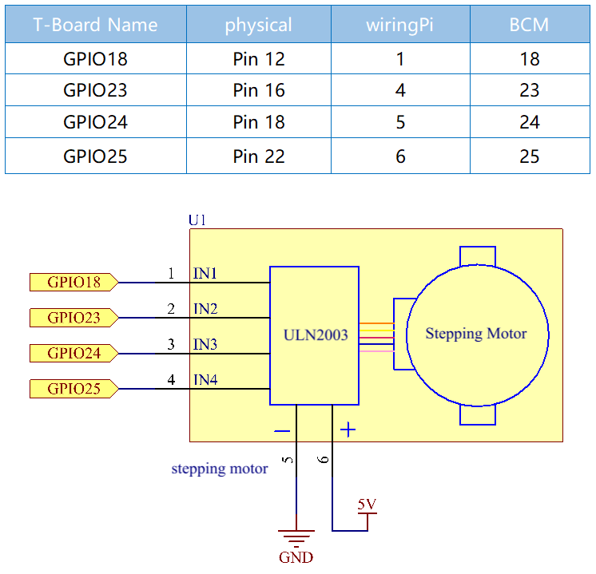

注釈
こんにちは、SunFounderのRaspberry Pi & Arduino & ESP32愛好家コミュニティへようこそ！Facebook上でRaspberry Pi、Arduino、ESP32についてもっと深く掘り下げ、他の愛好家と交流しましょう。
参加する理由は？
エキスパートサポート：コミュニティやチームの助けを借りて、販売後の問題や技術的な課題を解決します。
学び＆共有：ヒントやチュートリアルを交換してスキルを向上させましょう。
独占的なプレビュー：新製品の発表や先行プレビューに早期アクセスしましょう。
特別割引：最新製品の独占割引をお楽しみください。
祭りのプロモーションとギフト：ギフトや祝日のプロモーションに参加しましょう。
👉 私たちと一緒に探索し、創造する準備はできていますか？[ここ]をクリックして今すぐ参加しましょう！
1.3.3 ステッピングモーター
前書き
独自の設計により、ステッピングモーターはフィードバックメカニズムなしで高度な精度で制御できる。一連の磁石が取り付けられたステッパーのシャフトは、特定のシーケンスで正と負に帯電する一連の電磁コイルによって制御され、小さな「ステップ」で前後に正確に移動する。
部品

原理
ステッピングモーター
ステッパーには、ユニポーラーとバイポーラーの2つのタイプがあり、使用しているタイプを知ることが非常に重要である。 この実験では、ユニポーラステッパーを使用する。
ステッピングモーターは単相DC電源を使用する4相モーターである。 適切な時系列でモーターのすべての相巻線に通電する限り、一歩一歩に回転させることができる。 4相リアクティブステッピングモーターの概略図：

図では、モーターの中央にローター-歯車状の永久磁石がある。ローターの周りの0〜5は歯である。 さらに外側には、8つの磁極があり、それぞれ反対側の2つの磁極がコイル巻線で接続されている。 そのため、AからDまでの4つのペアを形成し、相と呼ばれる。スイッチSA、SB、SC、SDに接続するリード線が4本ある。 したがって、回路では4つの相が並列になっており、1つの相の2つの磁極は直列になっている。
4相ステッピングモーターの動作原理は次の通りである:
スイッチSBの電源がオンになると、スイッチSA、SC、およびSDの電源がオフになり、B相の磁極がローターの歯0と3と整列する。 同時に、歯1と4は、C相とD相の極を持つ互い違いに配列した歯を生成する。 歯2と5は、D相とA相の極を持つ互い違いに配列した歯を生成する。 スイッチSCの電源がオン、スイッチSB、SA、およびSDの電源がオフの場合、ローターはC相巻線の磁場と歯1と4の間の磁場の下で回転する。 次に、歯1と4がC相巻線の磁極と整列する。 一方、歯0と3はA相とB相の極を持つ互い違いに配列した歯を生成し、歯2と5はA相とD相の極を持つ互い違いに配列した歯を生成する。 同様の状況が続いていく。 A、B、C、D相に順番に通電すると、ローターはA、B、C、Dの順に回転する。

4相ステッピングモーターには、3つの動作モードがある：シングル4ステップ、ダブル4ステップ、および8ステップ。 シングル4ステップとダブル4ステップのステップ角は同じであるが、シングル4ステップの駆動トルクは小さくなる。 8ステップのステップ角は、シングル4ステップおよびダブル4ステップの半分である。 したがって、8ステップの動作モードは、高い駆動トルクを維持し、制御精度を向上させることができる。
使用するステッピングモーターのステータには32個の磁極があるため、円には32ステップが必要である。 ステッピングモーターの出力軸は減速装置セットに接続され、減速比は1/64である。 ですから、最終出力シャフトは32 * 64 = 2048ステップを必要とする円を回転させる。
ULN2003
モーターを円に適用するには、ドライバーボードを使用する必要があります。 ステッパーモータードライバ-ULN2003は7チャネルインバータサークルです。 つまり、入力ピンが高レベルの場合、ULN2003の出力ピンは低レベルであり、その逆も同様です。 IN1 に高レベルを供給し、IN2、IN3、IN4 に低レベルを供給すると、出力端 OUT1 は低レベルであり、他のすべての出力端は高レベルになります。 チップの内部構造を以下に示します。

ULN2003チップと4つのLEDで構成されるステッピングモータードライバーを以下に示す。 ボードでは、IN1、IN2、IN3、IN4が入力として機能し、4つのLED、A、B、C、Dは入力ピンの指示器である。 さらに、OUT1、OUT2、OUT3、およびOUT4はそれぞれ、ステッピングモータードライバーのSA、SB、SC、およびSDに接続されている。 IN1の値が高レベルに設定されると、Aが点灯し、スイッチSAの電源がオンになり、ステッピングモーターが1ステップで回転する。 同様のケースが何度も繰り返される。したがって、ステッピングモーターに特定の時系列を与えるだけで、ステップごとに回転する。 ステッピングモーターに特定の時系列を提供するために、ここでULN2003を使用する。

回路図
実験手順
ステップ1： 回路を作る。

ステップ2： コードのフォルダーに入る。
cd ~/davinci-kit-for-raspberry-pi/c/1.3.3/
ステップ3： コードをコンパイルする。
gcc 1.3.3_StepperMotor.c -lwiringPi
ステップ4： EXEファイルを実行する。
sudo ./a.out
コードが実行されると、入力「a」または「c」に応じてステッピングモーターが時計回りまたは反時計回りに回転する。
コード
#include <stdio.h>
#include <wiringPi.h>
const int motorPin[] = {1, 4, 5, 6};
int rolePerMinute = 15;
int stepsPerRevolution = 2048;
int stepSpeed = 0;
void rotary(char direction){
if(direction == 'c'){
for(int j=0;j<4;j++){
for(int i=0;i<4;i++)
{digitalWrite(motorPin[i],0x99>>j & (0x08>>i));}
delayMicroseconds(stepSpeed);
}
}
else if(direction =='a'){
for(int j=0;j<4;j++){
for(int i=0;i<4;i++)
{digitalWrite(motorPin[i],0x99<<j & (0x80>>i));}
delayMicroseconds(stepSpeed);
}
}
}
void loop()
{
char direction = '0';
while (1)
{
printf("select motor direction a=anticlockwise, c=clockwise: ");
delay(100);
direction=getchar();
if (direction == 'c')
{
printf("motor running clockwise\n");
delay(100);
break;
}
else if (direction == 'a')
{
printf("motor running anti-clockwise\n");
delay(100);
break;
}
else
{
printf("input error, please try again!\n");
delay(100);
}
}
while(1)
{
rotary(direction);
}
}
void main(void)
{
if (wiringPiSetup() == -1)
{
printf("setup wiringPi failed !");
return;
}
for (int i = 0; i < 4; i++)
{
pinMode(motorPin[i], OUTPUT);
}
stepSpeed = (60000000 / rolePerMinute) / stepsPerRevolution;
loop();
}
コードの説明
int rolePerMinute = 15;
int stepsPerRevolution = 2048;
int stepSpeed = 0;
rolePerMinute: 1分あたりの回転数。このキットで使用されるステッピングモーターのRPMは0〜17である。
stepPerRevolution: 1ターンのステップ数、およびこのキットで使用されるステッピングモーターには、1回転あたり2048ステップが必要である。
stepSpeed: 各ステップに使用される時間、 main() では、それらに値を割り当てる。 (60000000/rolePerMinute)/stepsPerRevolution （60,000,000 us = 1分）
void loop()
{
char direction = '0';
while (1)
{
printf("select motor direction a=anticlockwise, c=clockwise: ");
direction=getchar();
if (direction == 'c')
{
printf("motor running clockwise\n");
break;
}
else if (direction == 'a')
{
printf("motor running anti-clockwise\n");
break;
}
else
{
printf("input error, please try again!\n");
}
}
while(1)
{
rotary(direction);
}
}
loop() 関数は、2つの部分（2つの while(1) の間にある）に大まかに分けられている：
最初の部分の目的は、key valueを取得することである。「a」または「c」が取得されたら、ループを終了して入力を停止してください。
2番目の部分は rotary(direction) を呼び出して、ステッピングモーターを動作させる。
void rotary(char direction){
if(direction == 'c'){
for(int j=0;j<4;j++){
for(int i=0;i<4;i++)
{digitalWrite(motorPin[i],0x99>>j & (0x08>>i));}
delayMicroseconds(stepSpeed);
}
}
else if(direction =='a'){
for(int j=0;j<4;j++){
for(int i=0;i<4;i++)
{digitalWrite(motorPin[i],0x99<<j & (0x80>>i));}
delayMicroseconds(stepSpeed);
}
}
}
ステッピングモーターを 時計回りに回転させる ために、motorPinのレベルス状態要求は以下の通りである：

したがって、2層のfor文を使用してMotorPinの潜在的な書き込みを実装する。
Step1では、j=0、i=0〜4。
motorPin[0] は高レベル (10011001 & 00001000 = 1) で書き込まれる
motorPin[1] は低レベル (10011001 & 00000100 = 0) で書き込まれる
motorPin[2] は低レベル (10011001 & 00000010 = 0) で書き込まれる
motorPin[3] は高レベル (10011001 & 00000001 = 1) で書き込まれる
Step2では、j=1、i= 0〜4。
motorPin[0] は高レベル (01001100 & 00001000 = 1) で書き込まれる
motorPin[1] は低レベル (01001100 & 00000100 = 1) などで書き込
まれる。
また、ステッピングモーターを 反時計回り に回転させるために、motorPinのレベルステータスを次の表に示す。

Step1では、j=0、i=0〜4。
motorPin[0] は高レベル (10011001 & 10000000 = 1)で書き込まれる
motorPin[1] は低レベル (10011001 & 01000000 = 0)で書き込まれる
ステップ2では、j=1、i=0〜4。
motorPin[0] は高レベル (00110010 & 10000000 = 0)で書き込まれる
motorPin[1] は低レベル (00110010 & 01000000 = 0)で書き込まれる
まれる。